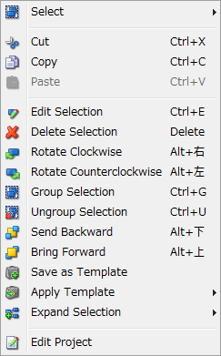

DIY Layout Creator 3.x 非公式日本語簡易マニュアル
2016年09月17日 カテゴリー：メモ・雑記
誠に勝手ながら、DIY Layout Creator 3.xの簡易マニュアルを記載させていただきます。
この記事を書いている時点の最新バージョンは3.31.0です。
もっと詳しい英語マニュアルはこちら
【導入方法】
https://java.com/からJAVAをダウンロード、インストール（ソフトを動かすために必要）
↓
サイトDIY Fever→DIY Layout Creator→Download Pageから最新バージョンのzipファイル（diylc-3.31.0.zip）をダウンロードし、CドライブProgram Filesフォルダ等に解凍
※どのフォルダでもいいですが、フォルダ名に日本語があると起動しない場合があります。
↓
（Windowsの場合）解凍したフォルダ内のdiylc.exeを実行
（Linux、Unix、Macの場合）ターミナルを起動し、「cd <解凍したフォルダのパス>」を入力後「./run.sh」を入力
※起動時にテンプレート呼出画面が出てきますが、×で閉じてOKです。
【操作方法】
例として抵抗を配置します。
(1)Passiveタブを選択 (2)Resistorをクリック (3)配置したい位置2箇所をクリック
※配置するときに1箇所クリックだけでよい部品もあります。
配置後すぐ（またはダブルクリックで）編集ダイアログが表示されます。Alpha（透過度）・色・抵抗値や大きさ等を編集できます。右側の四角にチェックを入れるとその部品のデフォルトの値として保存できます。
右クリックでコピーや回転もできます。Save as Templateで、部品テンプレートとして名前をつけて保存できます。部品テンプレートは右クリックメニュー内のApply Templateで適用するか、ツールボックスの部品画像横の▼から呼び出せます。

部品を移動するときは部品本体をドラッグします。部品を選択した状態で緑色になっている点はその点単独で動かすことができます。
【Configの内容】
・Anti-Aliasing: 画像のギザギザがきれいになりますが、ソフトの動作は遅くなります。
・Auto-Create Pads: 部品を配置したときに、ソルダーパッド（丸い円）が自動的に追加されます。
・Auto-Edit Mode: 部品を配置したときに、部品編集ダイアログがすぐに表示されます。
・Continuous Creation: 同じ部品を連続して配置します。
・Export Grid: 印刷や画像出力の際、グリッド線も出力します。
・Hi-Quality Rendering: 画質が上がりますが、ソフトの動作は遅くなります。
・Mouse Wheel Zoom: マウスホイールで拡大縮小できます。
・Outline Mode: 抵抗・コンデンサ等のパーツのみが透過されます。
・Snap to Grid: 部品がグリッドに合わせて配置されます。
・Sticky Points: 移動時に部品同士がくっついた状態になります。※この機能は、Ctrlキーを押している間有効と無効が切り替わります。
・Theme: 画面色を変更できます。
【その他の機能】
・マウスで範囲選択すると部品を複数選択できるので、まとめて移動や回転ができます。
・Fileメニューから各種画像・pdf・部品リスト出力や印刷等ができます。
・ステータスバー左に現在の選択状態等が表示されます。
・表示倍率を右下のZoom:で変更できます。
・解凍したフォルダ内のtemplatesフォルダにdiyファイルを保存しておくと、起動時に呼び出すことができます。私は下図のようなファイルを作っています。